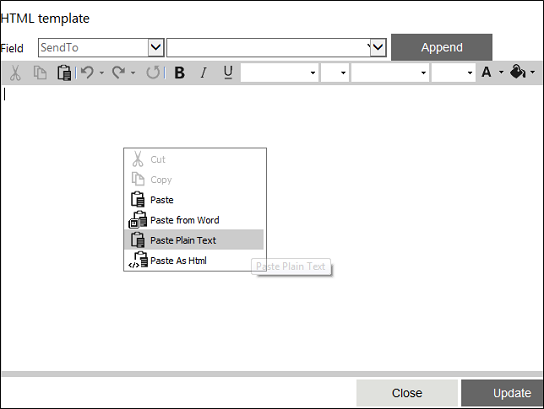

No
Activity Description:
The Information Activity is included in the AVEVA Work Tasks workflow process designs when there is a need to provide some information to a set of actors. The actor(s) to whom the information is to be sent can be selected on the basis of various factors like first name, department, designation, email etc. The subject and contents of the information can be customized for each actor.
Application Scenarios:
Typical application scenarios could be the Leave Application Workflow Process, where information needs to be sent to the applicant if the leave is approved or rejected, or the Technical Support Request Workflow Process, where information needs to be sent to the appropriate technical support person about the support task being assigned to him/her. The Information activity can be used to send the information in both cases.
Activity Properties:
The Information activity has to be configured by specifying appropriate values for the different properties in the Activity Properties area. The Activity Properties can be accessed by clicking on the Activity Properties tool in the Tool Bar or by selecting the appropriate option from the right click menu for the Information activity. The Activity Properties are organized under the following groups of related properties. The properties under each group are described in this topic.
Name & Description
The properties in the Name & Description group have been described below. You can use these properties to specify the name and description for the activity.
Name - This property can be used to specify a name for the activity.
Property Type: Optional (This property needs to be set only if necessary.)
Description - This property specifies a brief description to be displayed for the activity.
Property Type: Optional (This property needs to be set only if necessary.)
Display Name - This property specifies the name to be displayed for the activity in the Work items list.
Property Type: Optional (This property need not be set if the display name is already configured in the Actions.xml. The name entered here overrides any display name that is configured for this activity in the Actions.xml file.)
Configuration
The properties in the Configuration group have been described below. You can use these properties to configure the functionality of the activity.
Delivery Channels - This property is used to specify the delivery channels to deliver this activity to the assigned actor(s). Multiple channels can be specified giving the actor(s) different options to act on the work item.
Property Type: Optional (This property needs to be set only if necessary.)
Steps to set the Delivery Channels property
See Info - Delivery Channels for a detailed description of the Delivery Channels property window.
Work Item Fields - This property is used to add the Work Item Fields to be used to display application data as well as value in variables and content in the Work items list when this activity is executed.
Property Type: Optional (This property needs to be set only if necessary.)
Steps to set the Work Item Fields property
See Info - Work Item Fields for a detailed description of the Work Item Fields property window.
Actors
The properties in the Actors group have been described below. You can use these properties to specify the actors who will work on the activity and related properties.
Assign Actor(s) - This property specifies the actor(s) who has to take up the Information activity. It is tagged with the Ignore Unavailable Resources property which in turn is tagged with Alternate Resource Allowed. This will be explained in detail later.
Property Type: Mandatory (This property must be set if the activity is to be assigned to any resource(s).)
Steps to set the Assign Actor(s) property
See Info - Assign Actor(s) for a detailed description of the Assign Actor(s) property window.
Assign Queue(s) - This property specifies the queue(s) to which the Information activity is to be assigned.
Property Type: Mandatory (This property must be set if the activity is to be assigned to any Queue(s).)
Steps to set the Assign Queue(s) property
See Info - Assign Queue(s) for a detailed description of the Assign Queue(s) property window.
Notification Contents
The properties in the Notification Contents group have been described below. You can use these properties to specify the content used to notify actors about the activity.
Subject - This is the subject of the Information work item. The subject can be customized for each actor.
Property Type: Optional (This property need not be set. If it is not set, the default subject line from the Actions.xml file is displayed.)
Steps to set the Subject property
See Info - Subject for a detailed description of the Subject property window.
Body - This is the actual message of the Information sent to the actor(s). The body can be customized for each actor. There is an Enterprise Console Explorer(plug-in) icon in the Body property window to get the work item details URL. See Enterprise Console Control (EC Plug-in) for more information.
Property Type: Optional (This property need not be set.)
Steps to set the Body property
See Info - Body for a detailed description of the Body property window.
From Email Address - This property is used to specify the email address from which notification messages will be sent for the activity.
Property Type: Optional (This property needs to be set only if necessary. If it is not set, the default value in Activities.xml will be used.)
Send Notification Email - If this property is set to 'Yes', then notification emails will be sent to the actors. If it is set to 'Yes-HTML', then the emails will be sent in HTML format.
Property Type: Optional (This property needs to be set only if necessary.)
Redirect URL - This property is used to get the URL of the web page to redirect the client to, in the case of synchronous execution of the activity.
Property Type: Optional (This property needs to be set only if necessary.)
Steps to set the Redirect URL property
See Info - Redirect URL for a detailed description of the Redirect URL property window.
Custom Document View URL - This property is used to get the URL of the page to which the custom document dlls does a post.
Property Type: Optional (This property needs to be set only if necessary.)
Steps to set the Custom Document View URL property
See Info - Custom Document View URL for a detailed description of the Custom Document View URL property window.
Mail Channel
The properties in the Mail Channel group have been described below. You can use these properties to customize the Information activity (activities) with different mail channel templates.
Use html template from property - If this property is set to 'No', it will take the mail channel template from the physical path
'[AVEVA Work Tasks Installed Path]\BPM.NET\WorkflowElements\Default\en-US\Templates\OutlookEmailTemplate\Information.html.
If this property is set to 'Yes' and the "HTML Template" property is empty, it will take the mail channel template from the physical path
'[AVEVA Work Tasks Installed Path]\BPM.NET\WorkflowElements\Default\en-US\Templates\OutlookEmailTemplate\Information.html.
Property Type: Optional (This property needs to be set only if necessary.)
HTML template - This property is used to define the html template for mail channel.
Property Type: Optional (This property needs to be set only if necessary.)
Steps to set the HTML template
See Info - HTML template for a detailed description of the property HTML template window.
Attachment
.
Property Type: Optional (This property needs to be set only if necessary.)
Steps to set the Attachment property
See Info - Attach Reports for a detailed description of this property.
Activity outputs:
The Information Activity does not return any value.
Escalation & Timeout
You can use this property to specify escalation and timeout settings for the activity.
Timeout for Activity - This property is used for setting timeouts for the information activity. If specified, the activity will be timed out after the specified time span and will be moved from the Inbox.
The timeout setting must be specified in the below format:
0.00:00:00 which indicates Day.HH:MM:SS
Exception Behavior
Each activity has the Raise Error on Unhandled Linked Output property on click of which, it shows all the default configured mapped error outputs in red with their check boxes selected.
See Mapped Error Output for more details.